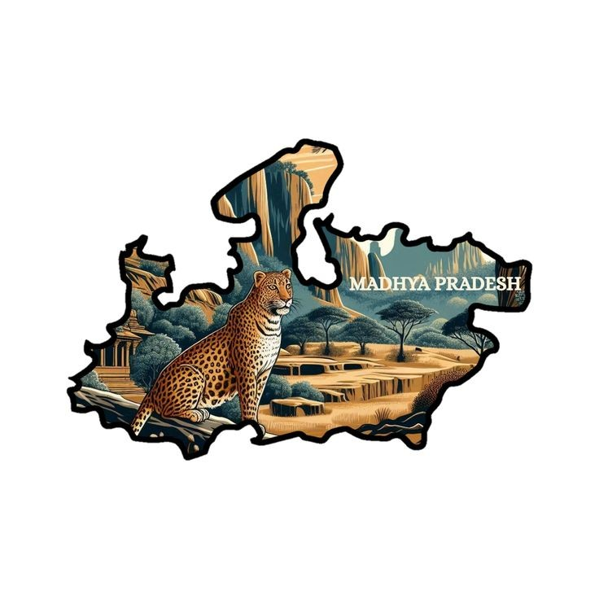
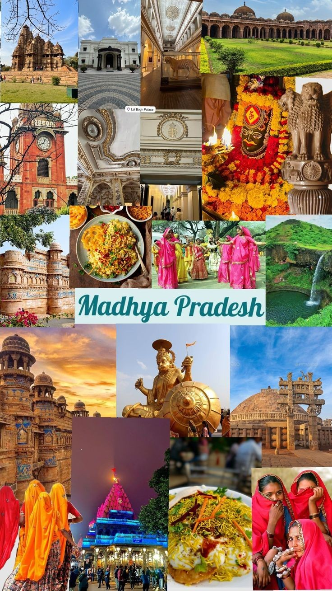
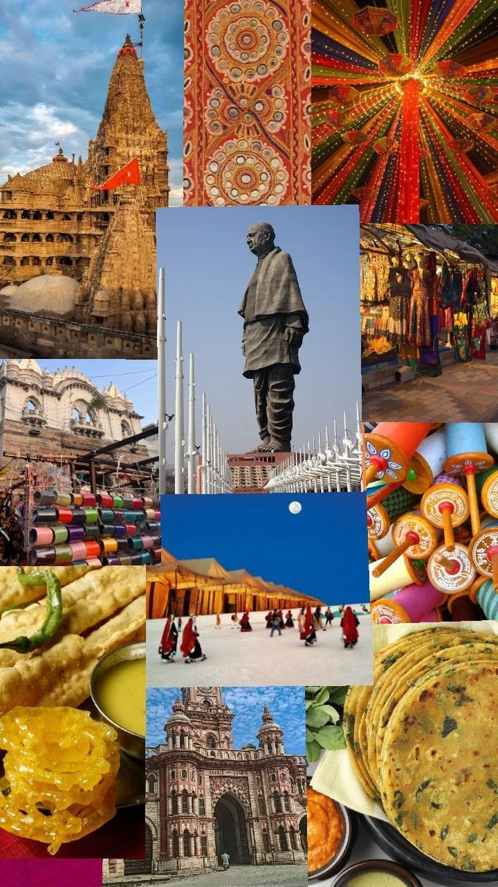
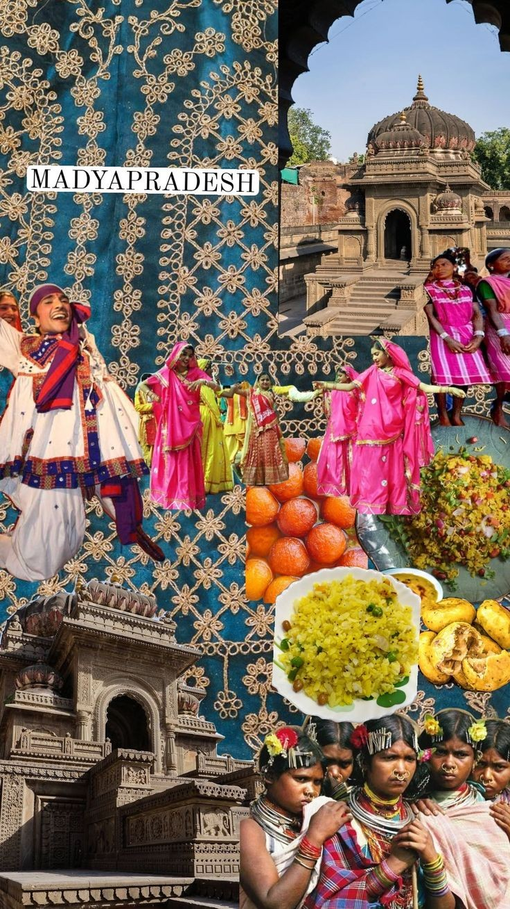
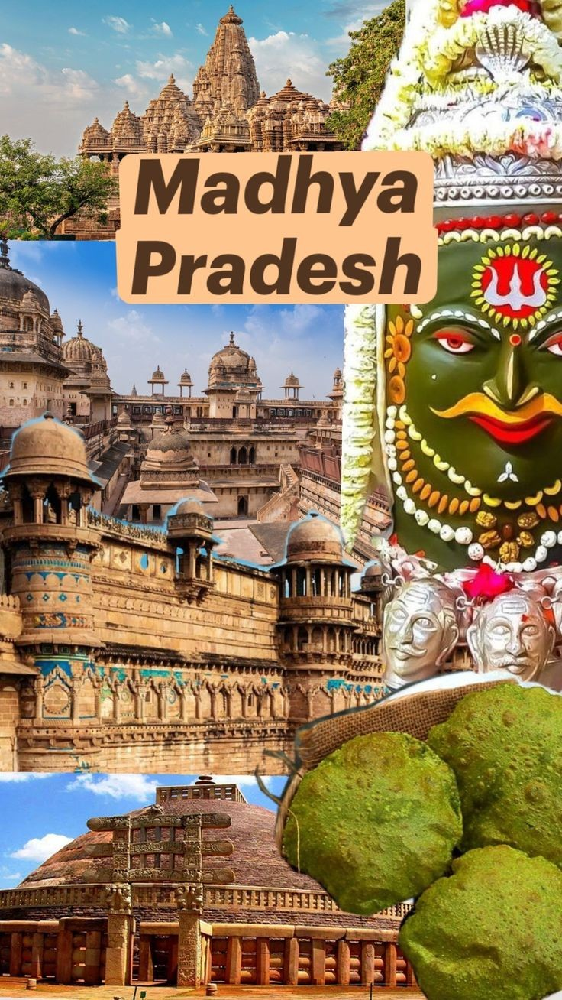
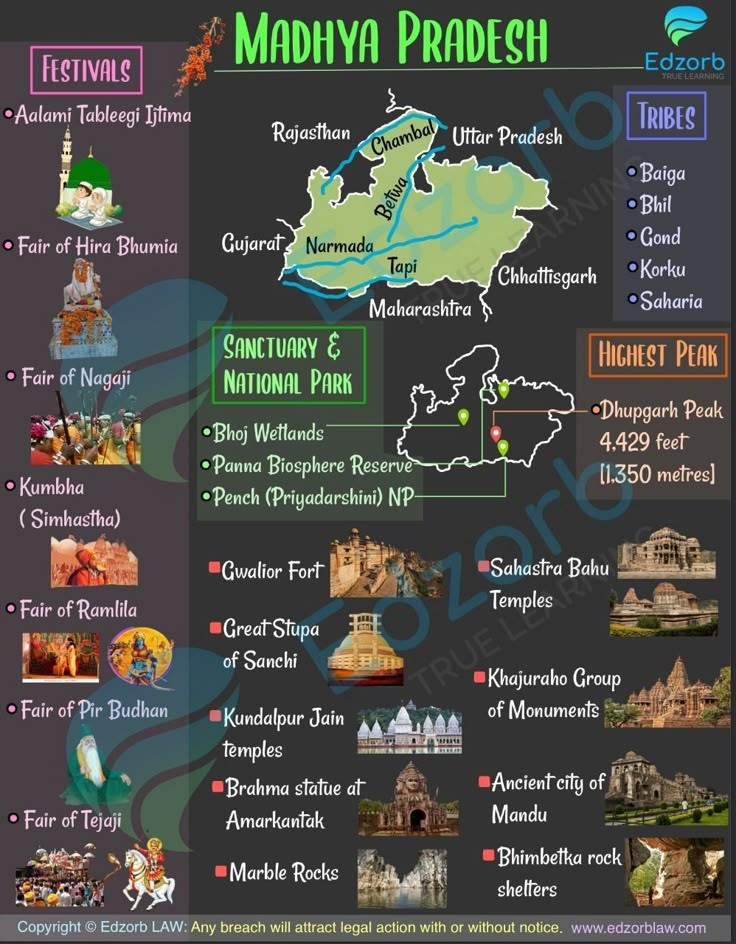
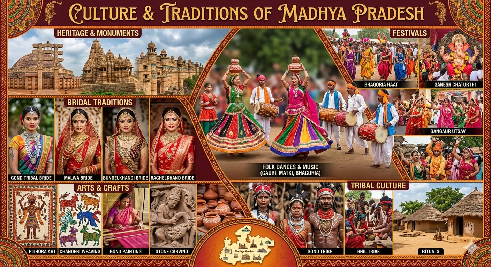
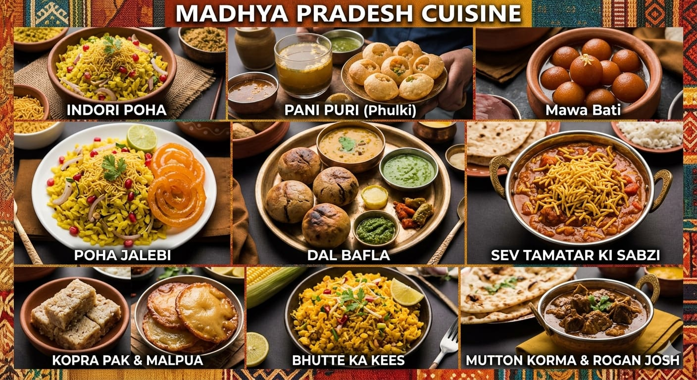
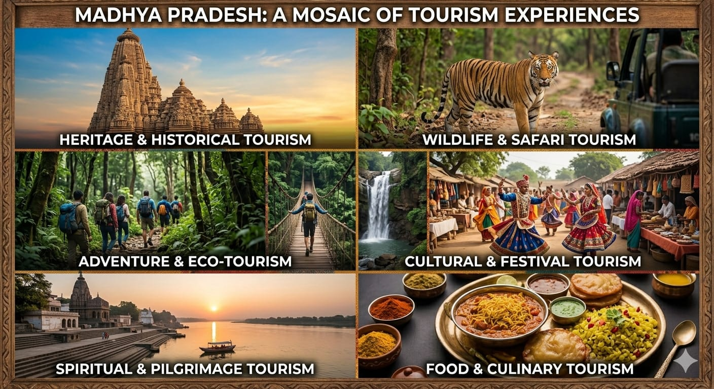

Introduction

Madhya Pradesh, often called the “Heart of India”, is a central state of India known for its rich cultural heritage, natural beauty, and historical significance. It is the second-largest state in India by area and shares its borders with several states like Uttar Pradesh, Maharashtra, Rajasthan, Gujarat, and Chhattisgarh. The capital city of Madhya Pradesh is Bhopal, known as the “City of Lakes,” while Indore is its largest city and commercial hub. Madhya Pradesh has a deep historical background, with evidence of human life dating back to prehistoric times, especially in places like the Bhimbetka Rock Shelters. The state is also famous for its ancient temples and monuments, including Khajuraho Group of Monuments and the Sanchi Stupa, which reflect India’s architectural brilliance. The state is blessed with diverse geography, including forests, rivers, and wildlife. Major rivers like the Narmada River and Tapti River flow through the region. It is also home to famous national parks such as Kanha National Park and Bandhavgarh National Park, known for their rich biodiversity and tiger population. Culturally, Madhya Pradesh is a blend of traditions, languages, and festivals. Folk dances like Gaur Dance and Matki Dance, along with vibrant festivals, reflect the lively spirit of the people. The cuisine is simple yet flavorful, including dishes like Poha and Bhutte ka Kees. Overall, Madhya Pradesh is a unique destination that beautifully combines history, culture, and nature, making it one of the most fascinating states in India.




History & Heritage

Madhya Pradesh has a rich and diverse history that dates back to prehistoric times. Evidence of early human life can be seen in the Bhimbetka Rock Shelters, where ancient cave paintings show how humans lived thousands of years ago.
- Ancient History In ancient times, this region was part of powerful kingdoms like the Maurya Empire under Ashoka. During his rule, Buddhism spread widely, and monuments like the Sanchi Stupa were built, which remain important heritage sites today. Later, the region came under the Gupta Empire, often called the Golden Age of India, when art, literature, and science flourished.
- Medieval Period During the medieval era, Madhya Pradesh was ruled by several dynasties such as the Chandelas, who built the world-famous Khajuraho Group of Monuments. These temples are known for their stunning architecture and intricate carvings. The state also saw the rise of the Gond kingdoms, with strong rulers like Rani Durgavati, who is remembered for her bravery and sacrifice.
- Mughal and Maratha Period Later, Madhya Pradesh became part of the Mughal Empire and then came under the control of the Marathas. Many forts, palaces, and administrative systems developed during this time, adding to the region’s heritage.
- British Rule and Independence During British rule, the region was divided into different princely states and provinces. After India gained independence in 1947, Madhya Pradesh was formed as a state in 1956 through the reorganization of states.
- Heritage of Madhya Pradesh Madhya Pradesh is famous for its cultural and architectural heritage, which includes:
- Khajuraho Group of Monuments – Known for artistic sculptures
- Sanchi Stupa – Symbol of peace and Buddhism
- Gwalior Fort – One of the strongest forts in India
- Orchha Fort Complex – Famous for royal palaces and temples
Monuments and Architecture
Culture & Tradition

Madhya Pradesh is known for its rich and vibrant culture, which reflects a beautiful blend of tribal traditions, ancient customs, and diverse lifestyles. Being located in the heart of India, it showcases a mix of cultural influences from all parts of the country.
- Folk Dance and Music The state is famous for its colorful folk dances and traditional music. Some popular dance forms include:
- Gaur Dance – Performed by the Gond tribe
- Matki Dance – Popular among women
- Tertali Dance – Known for rhythmic movements
- Festivals People in Madhya Pradesh celebrate festivals with great enthusiasm and devotion. Major festivals include:
- Diwali – Festival of lights
- Holi – Festival of colors
- Navratri – Dedicated to Goddess Durga
- Traditional Dress The traditional clothing reflects simplicity and culture: Women wear sarees like Chanderi and Maheshwari sarees Men traditionally wear dhoti, kurta, and turbans These outfits are not only comfortable but also represent the cultural identity of the region.
- Handicrafts and Art Madhya Pradesh is well known for its traditional crafts, such as:
- Chanderi and Maheshwari textiles
- Gond tribal paintings
- Bamboo work, pottery, and stone carving These crafts show the artistic skills passed down through generations.
Food

The cuisine of Madhya Pradesh is simple, delicious, and full of traditional flavors. It reflects a mix of North Indian and Central Indian food styles, with a strong influence of local ingredients and rural cooking methods.
- Popular Dishes Some of the most famous dishes of Madhya Pradesh include:
- Poha – A light and healthy breakfast made from flattened rice, especially popular in cities like Indore
- Jalebi – Often served hot with poha, making a famous combo
- Dal Bafla – A traditional dish similar to dal baati, served with ghee
- Bhutte ka Kees – Made from grated corn cooked with spices and milk
- Sabudana Khichdi – Commonly eaten during fasting days
- Taste and Style The food of Madhya Pradesh is usually:
- Mild to moderately spicy, Rich in flavor but not too oily, Made with simple ingredients like wheat, lentils, and vegetables, Both vegetarian and non-vegetarian dishes are available, but vegetarian food is more commonly preferred.
- Sweets and Snacks Madhya Pradesh is also famous for its sweets and street food:
- Mawa Bati – A rich sweet made from khoya
- Malpua – A traditional pancake-like sweet
- Kachori – A spicy fried snack
- Samosa – A popular street food
- Street Food Culture Cities like Indore are known for their vibrant street food culture. Places like Sarafa Bazaar offer a variety of tasty dishes late at night, attracting food lovers from all over.
Tourism

"Explore the Heart of India”
Welcome to a beautiful journey through Madhya Pradesh — a land full of history, nature, culture, and adventure. Known as the Heart of India, this state offers unforgettable experiences for every traveler.- Historical Tourism Madhya Pradesh is rich in historical monuments and ancient architecture:
- Khajuraho Group of Monuments – Famous for stunning carvings
- Sanchi Stupa – A symbol of peace
- Gwalior Fort – One of India’s strongest forts
- Orchha Fort Complex – A blend of palaces and temples
- Wildlife and Nature Tourism The state is also a paradise for nature lovers:
- Kanha National Park – Famous for tigers
- Bandhavgarh National Park – High tiger population
- Pachmarhi – Known as the “Queen of Satpura”
- Religious Tourism Madhya Pradesh is home to many sacred places:
- Mahakaleshwar Jyotirlinga – One of the 12 Jyotirlingas
- Omkareshwar Temple – Located on the Narmada River
- Ujjain – Famous for religious significance
- Cultural Tourism Visitors can experience vibrant traditions, festivals, and local art. Handicrafts, tribal culture, and folk dances make the journey even more colorful and memorable.
- Food Tourism Tourists also enjoy delicious local food like Poha, Jalebi, and Dal Bafla, especially in food hubs like Indore.